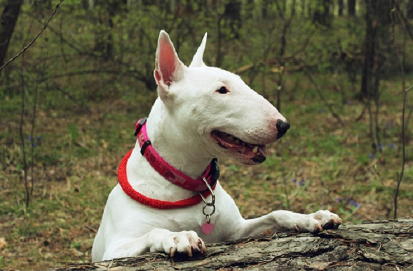

O BULL TERRIER É UM ÓTIMO PARCEIRO E ESTÁ SEMPRE DISPOSTO! Muita gente conhece o Bull Terrier pela sua aparência marcante. Sempre com uma expressão determinada, ele pode parecer bastante sério, no entanto, é um cachorro que se apega facilmente à família. Com porte médio e sempre à procura de diversão, a raça tem conquistado cada vez mais tutores. Contudo, é importante saber que se trata de um cachorro obstinado, que necessita de muita disciplina. Com o adestramento adequado, logo ele se tornará super amigável. A adaptação é ainda mais rápida quando ele é inserido em uma rotina mais agitada e estimulante.
Os cães da raça Bull Terrier são fortes e estão sempre à procura de novos desafios. Porém, eles também têm seus momentos de calma, principalmente quando há um equilíbrio entre o gasto de energia e os descansos, com hábitos diários de exercícios e brincadeiras. Todo esse condicionamento físico requer ocupação constante. Por isso, esse cachorro está sempre procurando alguma coisa para fazer, desde filhote. Isso significa que o tutor deve utilizar jogos e atividades inovadoras constantemente, que vão fazer da experiência com o novo amigo de quatro patas ainda melhor!
Trata-se de um cão que pode ser amigável com estranhos, mas, devido sua força física, é bom tomar muito cuidado durante as brincadeiras, ele pode se exaltar e acabar machucando alguma visita, mesmo sem ter a intenção. Por essas e outras razões, a melhor forma de trabalhar a disciplina do seu amigo é levá-lo para o adestramento desde cedo. Além de ser uma ótima experiência para o comportamento, também contribui para uma vida mais saudável e feliz.
Fizemos um gráfico nivelando de 0 a 5 as características da raça, veja a baixo!
Facilmente reconhecidos pela aparência, eles são muito fortes e possuem o corpo musculoso e balanceado. Porém, nenhuma outra característica se destaca tanto quanto o focinho comprido e a cabeça oval. Geralmente, as orelhinhas ficam apontadas para cima, principalmente quando já são adultos. A cauda também é marcante, com tamanho curto, e costumam ficar na horizontal. O Bull Terrier branco é mais comum e reconhecido, mas também é possível encontrá-los com pelagem colorida sobrepondo os pelos mais claros, nas cores preto, tigrado, vermelho, fulvo e tricolores.
O Bull Terrier, devido à sua natureza ativa, pode se sujar facilmente, exigindo cuidados regulares de higiene. Recomenda-se dar dois banhos por mês, usando água morna e produtos com moderação para evitar irritações na pele. Após o banho, é essencial secar completamente o cão para prevenir problemas de saúde. Embora sejam geralmente resistentes, visitas regulares ao veterinário são cruciais para prevenção e detecção precoce de doenças. Além disso, é importante protegê-los de temperaturas mais baixas, garantindo conforto e evitando complicações climáticas.
Todo filhotinho precisa de cuidados diferenciados, até porque, é nessa fase da vida que eles são mais sensíveis e estão em constante crescimento. Portanto, antes mesmo de receber seu novo amiguinho, verifique se a saúde dele está em perfeito estado, com vacinação e vermifugação em dia. No filhote de Bull Terrier também vai necessitar de um período de adaptação com o novo lar. Organize a sua casa para que o bichinho não corra nenhum risco de acidentes em escadas, batentes e obstáculos.